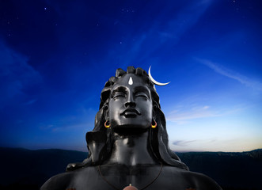

Adiyogi - The Source of Yoga
Tejeswar ReddyOver 15,000 years ago, predating all religion, Adiyogi, the first Yogi, transmitted the science of Yoga to his seven disciples, the Saptarishis. He expounded 112 ways through which human beings can transcend their limitations and reach their ultimate potential. Adiyogi’s offerings are tools for individual transformation, as individual transformation is the only way to transform the world. His fundamental message is that “in is the only way out” for human wellbeing and liberation.
Adiyogi is here to liberate you from disease, discomfort, and poverty – above all, from the very process of life and death. - Sadhguru
On the auspicious night of Mahashivaratri at Isha Yoga Center, an iconic face of “Adiyogi – the Source of Yoga” was unveiled by the Hon’ble Prime Minister Narendra Modi. Recognized as the world's largest bust sculpture by the Guinness World Records, the face of Adiyogi is 112 feet high, representing the 112 ways he offered for one to attain to wellbeing and one's Ultimate nature. Installed near the Adiyogi is the Yogeshwar Linga, which was consecrated by Sadhguru, as manifestation of five of the major chakras in the human system. Adiyogi, with the presence of the Yogeshwar Linga, has become a living entity.